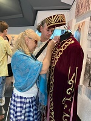

Страницы авторов "Тёмного леса"
Литературный Кисловодск и окрестности
Пишите нам! temnyjles@narod.ru
Для каждого колёса поезда выстукивают своё. Мысль, которая сейчас всецело владела мной, слышалась и в вагонном перестуке - "Я еду домой в гости". выражение странное. Иностранец бы точно не понял. Уехала я из Майкопа 20 лет назад и никаких чувств по этому поводу не испытывала, но в определённый момент мои внутренние шлюзы как будто открылись, и я поняла, что всё помню и хочу туда: хочу к тем улицам, по которым бегала в детстве, хочу к той площади, где пионеркой стояла в почётном карауле, хочу сходить в кафе мороженое, куда мы впервые пошли одни в шестом классе. Нарядившись по взрослому как нам тогда казалось, а потом в тот парк, где мы мчались на карусели, забыв о своей взрослости. И вот, колёса поезда уже сутки стучат - "Я еду домой".
Майкоп был центром Адыгейской автономной области в составе Краснодарского края. В 1991 году стал столицей республики Адыгея. Город всегда был многонациональным, но основными оставались русские и адыги или адыгейцы. Адыгейскую речь я слышала часто, и в жизни, и по радио. Были у меня и одноклассники адыгейцы. Майкоп находится в железнодорожном тупике. Через него не проходят поезда дальнего следования, только электрички в пределах края. Так что едем мы до Белореченска. Раньше это был основной железнодорожный узел. Теперь же пассажирские поезда здесь проходят только летом, а основной поток переместился в Краснодар, от которого до Майкопа три часа езды на автобусе. От Белоречки, как все её называют, полчаса на электричке, на автобусе чуть дольше, и мы на тихом вокзале, кажущемся особенно камерным после московских масштабов и многослойного, проникающего везде, шума. Отель наш очень уютный, то же камерный, с чудесным внутренним двориком и растущими в нём туями. В городе их всегда было много. Напротив расположен пив завод, в котором сейчас, кроме производственных помещений, находится гостиница и пара ресторанов. А ещё от нашего отеля совсем недалеко до городского парка.
На следующий день я и Геннадий встречаемся у входа в него с нашим индивидуальным гидом Юлией, такие здесь тоже есть. Встречаемся в восемь утра. Позже нельзя, будет очень жарко.
путь к месту встречи пролегает мимо драматического театра имени А.С. Пушкина. Здание с колоннами всё так же торжественно, но уже не кажется таким большим и величественным как в детстве, когда мы ходили сюда всем классом в конце четверти... В театре есть две труппы - русская и адыгейская. Перед входом с высокого пьедестала в виде колонны на нас, суетящихся и спешащих мимо, взирает бюст "солнца Русской поэзии":
Конечно, это наш Пушкин. Основание колонны покоится на плите, которая подсвечивается в тёмное время суток.
Ещё совсем немного метров, и мы у входа в городской парк или сад, как его называли со времени основания. С одной стороны от широкой входной аллеи надпись -городской парк, с другой - Майкоп и символ города - яблоко. Майкоп изначально был крепостью. Точкой отсчёта для существования города считают 1857 год. Когда Кавказская война закончилась, крепость стала обрастать слободой. Позже пригласили военного инженера, и он начертил план города: всё чётко и геометрически правильно. Улицы прямые, вытянуты с севера на юг и с запада на восток. Городской сад стал местом отдыха и общения горожан. Устроен он был из небольшого леса, примыкавшего к крепости. В нём прорубили аллеи, соорудили клумбы. Сейчас в парке преобладают буки, дубы и ясени. Климат в Майкопе жаркий, и фонтаны стали неотъемлемой частью городского благоустройства. Естественных условий для поступления воды не было. Река - Белая протекает внизу, тогда как парк располагается на вершине холма. Однако выход нашли. Воду брали из Белой, привозили её и заполняли огромные бочки, которые закапывали в землю и так искусно маскировали, что некоторые люди умудрялись в них проваливаться. Об этом не раз писали в местной газете.
Как и много лет назад, нас встречает на центральной аллее большой круглый фонтан. Сейчас к нему добавился круговой променад и сходящиеся лучами к центру дорожки. Наша компания сворачивает в боковую аллею и натыкается на сухой фонтан. Однако, эта группа белых медведей мне знакома. Медведица с двумя медвежатами, стоящие на льдине в окружении воды всегда привлекали моё внимание. Оказывается фонтан этот был создан ещё в 1927 году художником Андерсоном, вероятно таким же сказочником как его знаменитый однофамилец. Назывался фонтан "Арктика". Сооружение возвышалось метров на 10, и медведи с высоты глядели на город. Медведица прижимала к груди одной лапой большую рыбину, а рядом чайка ждала своей очереди на бесплатный обед. Воды сейчас в фонтане нет, но какова же была моя радость, когда обнаружился питьевой фонтанчик на парапете. Это был ритуал. Попить из него надо было обязательно, хоть мама и ругала за негигиеничность такого действия. От этого, разумеется, вода становилась слаще даже газировки с сиропом. Стакан которой можно было заполучить за три копейки прямо на центральной улице, где стояли автоматы. Мы с Геннадием похулиганили немножко - перелезли через парапет и пообнимались с медведями.
Покинув их, мы вскоре поворачиваем на аллею, которую называют набережной, хотя название это весьма условно. Парк находится на возвышенности, и все дорожки ведут к той, откуда открывается вид на реку Белую. Во времена моего детства здесь был просто крутой склон, заросший колючками. Теперь он разбит на террасы, по которым проложены асфальтированные дорожки. Мы гуляли по ним почти каждый вечер. Очень приятные были вечера. Знойный день окончен. В тёплом воздухе разлиты ароматы нагретой земли, растений, и тишина. слышно как где-то далеко лают собаки, и отдалённо шумит плотина. Внизу раскинулся бассейн. Это самый большой открытый бассейн в Европе. Его запустили в конце семидесятых годов. С высоты всё видно как на ладони. К бассейну через все террасы ведёт лестница. А за бассейном находится река Белая. Речка это горная, местами она очень быстрая, холодная и коварная, хотя участок, на который мы смотрим тихий и маловодный. Плотина находится чуть дальше. Местная электростанция является резервной. Вокруг бассейна ещё ведутся работы по обустройству зоны отдыха: радуют глаз газоны, манят к себе шезлонги. Но мы не поддаёмся соблазну, а сворачиваем ещё в одну аллею. Здесь, кажется, пробегала золушка, спешащая домой с бала, и потерявшая башмачок. Теперь эту изящную туфельку может примерить любая девушка. Но никому она ещё не пришлась в пору. Вот и стоит на своём постаменте до сих пор. В Майкопе провёл школьные годы наш замечательный сказочник - Евгений Шварц. Рядом с туфелькой мы видим послание от него, которое предупреждает: "когда-нибудь спросят - а что ты можешь, так сказать, предъявить, и никакие связи не помогут тебе сделать ножку маленькой, душу большой, а сердце справедливым".
Рядом расположился ещё один фонтан. Он напоминает торт из трёх коржей, а наверху грибок. Из него и изливаются живительные водяные струи. А ещё он выполняет роль стрелки часов, точнее его тень. Циферблатом является круг возле фонтана, где есть основные временные обозначения.
По улице Краснооктябрьской мы продолжаем путешествие по городу. Она получила своё название в 1918 году и уже его не меняла. Раньше ей случалось быть и Садовой, и Телеграфной, и Офицерской.. Последнее название напоминает об офицерском клубе, на первом этаже которого находился магазин колониальных товаров, на втором бальная зала, собственно офицерский клуб и помещение для заседаний городской думы. Сейчас здание находится на реконструкции, так как основательно разрушено. Центральная часть улицы в восьмидесятые годы стала пешеходной. А проходит она чуть ли ни через весь город. Здесь находится множество магазинов и кафе. Вдоль улицы растут каштаны. К сожалению они и ещё дубравы, поражены болезнью, при которой сухие листья появляются почти сразу после того как распустятся. Для лечения дереву необходимо делать уколы в камбий - слой древесины, где проходят его сосуды.
Вскоре мы дошли до исторической точки сборки, как назвала Юлия этот перекрёсток улиц Краснооктябрьской и Первомайской. Отсюда Майкоп разрастался в разные стороны. Улица Первомайская называлась Соборной. Там находился Успенский собор. Теперь на этом месте Адыгейский государственный университет, ранее педагогический институт. На углу мы видим старинный дом, сложенный из Майкопского кирпича необыкновенной плотности и прочности. Это бывший торговый дом Каплановых. Сейчас здесь находится Адыгейский республиканский институт гуманитарных исследований. Это место, где изучают культуру Адыгов. Исследователи отмечают особенную природу этой культуры. Дело в том, что до начала двадцатого века у Адыгов не было письменности, соответственно остались лишь устные источники, которые хранятся в памяти народа, передаются из поколения в поколение, не надеясь на записи. Таким образом хорошо сохраняются подробности обрядов и обычаев, но может страдать объективная картина. Важнейшие принципы, по которым жили Адыги, отражены в Адыго хабзе. Это свод качеств и нравственных правил, которые определяли степень адыгства человека. Адыго хабзе изображался в виде древа с золотыми яблоками, которые символизировали эти качества: человеколюбие, гостеприимство, ум, умение сохранять лицо.
Вскоре улица раздвинулась и открыла нам площадь Ленина. Памятник вождю был установлен в 1957 году, и до сих пор он зовёт нас в светлое будущее привычным жестом вытянутой руки. Прежде площадь являлась базарной. Рынок занимал даже гораздо большее место, чем современная площадь. Рядом на пересечении улиц Краснооктябрьской и Советской находится здание администрации. Ему так же немало лет. Долгое время в нём размещалась гостиница "Россия". Здание украшено башенкой, на которой установили часы. Теперь оно с полным правом может называться ратушей, так как имеет и административное назначение и часы. Башенка увенчана небольшим куполом. Там развиваются три флага: России, Адыгеи и Майкопа. У флага Республики тёмно-зелёный фон. На нём располагаются 12 звёзд: 9 полукругом, 3 под ними в ряд. Последниеявляются наконечниками для трёх перекрещенных стрел. Флаг Майкопа симметричный как большинство Адыгских орнаментов - левая и правая стороны зеркальны, фон красный. В верхней части изображены распустившиеся яблоневые почки - трилистники, ведь Майкоп означает - урочище диких яблонь или долина яблок. в нижней - головы бычков, которые являются символом Майкопской культуры. На пересечении современных улиц Курганной и Подгорной, в 1897 году археологом из Санкт-Петербурга -Веселовским был обнаружен курган Ошад, относящийся ко второй половине четвёртого тысячелетия до н.э. было найдено много старинных предметов и украшений, в том числе и золотые бычки оригинальных очертаний с ветвистыми рогами. Находки продолжаются и в наше время. Обнаружена подкурганная гробница, внутри которой находится полихромная роспись. На одной стороне изображено снаряжение охотника, на другой воина. Третью стенку занимает изображение женщины в позе роженицы. Учёные предполагают, что это связано с религиозными верованиями. Древние племена считали, что душа не умирает, а рождается вновь. У Адыгов встречается очень редкое явление - религиозный сенкретизм - веротерпимость. Каждый мог исповедовать веру предков, и это не сопровождалось никакими карами - ни физическими, ни материальными, ни социальными.
Поворачиваем на улицу Советскую и встречаемся с объектом, которого в советское время не было. Это Республиканская естественно-математическая школа - ремш. Здесь очень строгий отбор, сюда нельзя попасть, не будучи талантливым. Выпускники школы не предлагают себя ведущим университетам страны в качестве студентов. Наоборот, вузы стремятся успеть заполучить в свои ряды такого выпускника.
Школу окружает сад, но не простой, а математический. Дорожки его выложены красным кирпичом и наглядно демонстрируют загадку семи Кёнигсбергских мостов. Математик Энглер доказал, что по ним нельзя пройти, двигаясь только вперёд, один раз придётся вернуться назад. В центре сада сооружена громадная каменная лента Мёбиуса, по которой можно двигаться бесконечно. Практически использовалась она в системе конвеера, а также таким образом сворачивали ленту для печатных машинок. Есть здесь и многогранник Силаше, у него семь граней, любые две грани имеют общее ребро. Отдохнуть можно в беседке триангуляции. Она представляет собой прозрачную сферу, составленную как мозаика из треугольников.
Следующая фигура называется додекаэдр. Состоит она из равносторонних пятиугольников, объединённых в сферу. По этому принципу Адыги изготавливали колокольцы для своих животных. Каждый такой колоколец обладал особым голосом. Долгое время считали, что искусство выковывать их утрачено. Однако, появился необычный кузнец - Ася Елтых, которая смогла возродить древнее умение. У мастера есть и рецепт своего сплава, который она никому не выдаёт. Из него выковываются изящные украшения и скульптуры. У математического додекаэдра в середине пустота. А в Адыгских колокольцах внутри находился ещё шарик, который и звенел.
Помните школьное: Пифагоровы штаны во все стороны равны. Ученики математической школы имеют возможность наблюдать знаменитую теорему в самом прямом смысле. Перед нами прямоугольный треугольник. И гипотенуза, и катеты имеют продолжение в виде квадратов, и мы сразу видим, что квадрат гипотенузы действительно равен сумме квадратов катетов. Слово - гиперболоид всегда казалось мне страшным. Может быть благодаря Алексею Николаевичу Толстому и его инженеру Гарину. Но перед нами оказалось вполне мирное сооружение из трубок, каждая из которых перекручена как бельё при выжимании его руками. Все они не соприкасаясь друг с другом проходят от нижней, большей в диаметре опоры до верхней с меньшим диаметром. Оказывается, что такие конструкции делают высокие сооружения наиболее устойчивыми.
Своё кулинарное любопытство в Майкопе можно удовлетворить во многих местах. Есть даже кафе, где вас усадят за небольшие низкие деревянные столики на трёх ножках - анне. Сидеть придётся на стульчиках ещё более низких чем столы. Рассказывают, что Черкесы были худощавые и стройные. Понятно, почему. При такой посадке, да ещё с застёгнутым поясом много не съешь. Пояс Адыги за столом не расстёгивали, это считалось дурным тоном.
Одно из самых распространённых блюд Адыгейской кухни - щипс. Он представляет собой густой соус. Вроде бы ничего особенного: обжаривается лук, к нему добавляются мука и специи, потом мясной бульон. Однако, вкус необычный. Особенно, если в щипс обмакивать кусочки варёной курицы, посоленной чесночной солью. В обычную соль добавляют растёртый чеснок, специи по вкусу. Горячую ещё курицу посыпают такой солью и оставляют на некоторое время в покое, чтобы позже съесть со щипсом и большим удовольствием.
Отведали мы разных сортов адыгейского сыра. Это и мягкий белый сыр, и копчёный с золотистой корочкой, источающий умопомрачительный аромат, и сушёный на солнце сыр, почти не имеющий запаха, но каменной твёрдости. Именно он хранится дольше всех. В прежние времена сыр и мясо коптили в дымарях. В жилище прямо на полу разводили огонь. Над ним устраивали широкую трубу. Внутри на рейках размещали продукты.
Процесс приготовления адыгейского сыра казалось бы прост. На огонь ставят молоко. Слегка не доводят его до кипения. В этот момент вливают сыворотку по краю посуды. Получается створоженная масса. Её надо посолить, собрать и положить под пресс. Есть специальные корзинки. Дно их как раз соответствует кругу сыра. Вот и всё. Но сыр у всех получается разным.
Продукт этот служит начинкой и для выпечки. Халюжи и губаты начиняют адыгейским сыром, только первые жарят во фритюре, а у вторых тесто слоёное и их пекут в духовке.
В Адыгских семьях каждый раз при перемене блюда, его подавали на новом анне. Поэтому в доме их должно было быть много. Сейчас церемониал стал проще.
Ещё одно блюдо состоит из варёного риса, заправленного простоквашей - чху. Сделана она особым способом отчего степень густоты сильно повышается. Ещё туда кладут изюм и курагу. Вкус необычный и на любителя.
Могут вас побаловать и роскошным диссертом. Сначала палькау. Рецепт его прост, но мастерство здесь необходимо виртуозное. Замешивается крутое тесто на одних яйцах, очень тонко раскатывается. Потом наматывается на деревянный цилиндр с ручкой и жарится в масле. Затем готовые изделия поливают сахарным сиропом. Получаются хрустящие, слоёные бочонки. Курамби - традиционная адыгейская сладость, которой заканчивали праздничную трапезу. Это масса из сахара, муки и сливочного или топлёного масла. Вкусно, но очень калорийно, настоящее испытание для организма.
Очередным жарким днём состоялся наш поход в Национальный музей республики Адыгея. , но по пути невозможно было не заглянуть ещё в один сад. Называют его садом камней, можно назвать и садом сакуры, и то, и другое здесь есть. сад этот окружает нынешний филиал музея востока. Изначально здание было построено купцами Терзиянами, которые возглавляли армянскую диаспору в Майкопе. Размещался там армянский культурный центр и школа для девочек. Здание двухэтажное, но высота его чуть меньше современных пятиэтажек. Здесь очень высокие потолки и огромные окна. Оно являет собой образец стиля модерн. В старом Майкопе преобладали два архитектурных стиля - модерн и эклектика. В Советские годы в здании культурного центра находился авио клуб, а позже дворец пионеров.
открываем калитку, и начинается наше путешествие по извилистым дорожкам, напоминающим о восточных садах. Наших голов касаются ветви сакуры, иногда приходится кланяться, чтобы избежать встречи с ними. Листья сакуры похожи на листья черешни. Цветёт она в апреле, и тогда на яркую зелень молодой травы слетают розовые лепестки, покрывая её кружевной накидкой. Под деревьями, среди травы возвышаются большие серые шары. Это и есть знаменитые аммониты - память о океане Тетис, который покрывал территорию Адыгеи много тысяч лет назад. На дне его жили гигантские моллюски. Наступило время перемен. Огромный материк раскололся на части, дно океана поднялось. Сейчас здесь живём мы, но на память нам остались окаменевшие тела животных, заключённые в свои каменные саркафаги. Недалеко от Майкопа находится долина аммонитов, где их до сих пор ещё очень много. Горы Фишт и Аштен на самом деле являются рифами дна океана Тетис. У них достаточно хрупкая структура.
Осмотрев аммониты, даже посидев на них, направляемся в музей. Там нас ждёт рассказ о быте и занятиях Адыгов.
Приоритетом женщин было золотое шитье. Нам показали два его вида. Первое называется шитьё в прекреп. Оно самое древнее. Честно сказать, никогда не подумала бы, что это вышивка. Похоже на металлическое украшение. Дело в том, что когда вышивка была готова, её полировали кабаньим клыком, и она приобретала вид гладкой металлической пластинки. Во время вышивания на ткань накладывался трафарет, рисунок обводили. Затем трафарет убирали и вышивали, проклеивая нити изнутри. Другой вид золотого шитья называется - гладь, хотя это, кажется, не логичным, потому что изделия эти наоборот выпуклые. Происходит это от того, что трафарет в данном случае не убирают. Он остаётся под нитями.
Адыгейские женщины занимались плетением галунов. На пояс с помощью крючков прикрепляли дощечки с множеством отверстий. В них продевались нити. Проворные пальцы легко управляли ими. Искусство это сродни плетению кружев и макраме.
Мужской привилегией считалась тарефтика - украшение из металла оружия и хозяйственных вещей. Видов тарефтики так же несколько. Гравировка, когда рисунок прочерчивали на металлической поверхности. Техника черни предполагала нанесение смеси серебра, свинца и серы с последующим обжигом. Филигрань изготавливалась из тонкой проволоки, а зернь из маленьких металлических шариков.
Национальный женский костюм - сайе - включал длинное платье, сверху надевалось распашное одеяние. Всё это скреплялось поясом. При чём, чем старше становилась женщина, тем более широкий пояс она носила. Голову украшала затейливая шапочка с кисточкой и богатой вышивкой. Цвета преобладали неброские: бордовый, темно-зелёный, синий, чёрный. Дополнял женский наряд веер. Он был необычной прямоугольной формы, крепился к ручке и так же покрывался вышивкой.
Одним из главных предметов одежды Адыга являлась черкеска. Важную роль играли газыри - ряд маленьких карманчиков, которые тянутся от середины груди к подмышкам. В них хранили порох, а ещё порошок из сушёного мяса, соли и специй. Вне дома из этой смеси всегда можно было сварить питательный и вкусный бульон. Неразлучным спутником, другом и даже братом Адыги считали лошадь. Предметом гордости для них было седло. Оно изготавливалось с заботой о своём товарище. Посередине седла возвышалась небольшая продольная арка, которая защищала позвоночник животного от давления. Затем подкладывалась специальная четырёхлучная подушка, и всё это покрывалось кожей. Сбруя украшалась шитьём и тарефтикой. Социальное положение Адыга можно было определить по высоте его шапки.
Адыгейская земля славилась своим гостеприимством. Иностранные путешественники, в частности Англичанин Джеймс Белл писали о том, что можно пройти эту землю из конца в конец без единого рубля в кармане. Не принято было спрашивать гостя, откуда и куда он идёт. Во дворах сооружались специальные помещения - кунацкие. Гостей обслуживали парни и девушки. Хозяйка в кунацких не появлялась. Гость мог без слов дать понять, насколько он останется. Если плеть вешалась во всю длину, это означало, что гостить он будет долго. Угощение гостей считалось делом священным. Адыги были хорошими земледельцами и скотоводами, поэтому на столе всегда было вдоволь мяса, сыра, блюд из крупы, в том числе из проса и кукурузной муки, а так же овощей, фруктов и мёда. Занимались местные жители и виноделием.
Когда Адыги собирались вместе, то слушали певцов и чтецов, которые рассказывали об истории и обычаях народа. Музыкальное сопровождение осуществлялось с помощью духового инструмента - камыль, который вырезался из камыша и напоминал флейту. Аккомпанировали и на смычковом инструменте с несколькими струнами из конского волоса и таким же смычком. Черкесы всегда были очень подвижными и пластичными. Они самозабвенно отдавались танцу. На свадьбах устраивались настоящие танцевальные марафоны.
В скверике рядом с музеем находится памятник "Очаг". Он выполнен в виде высокой башни и сооружён в честь возвращения черкесов на Родину. Очаг - это центр дома. В нём сосредоточена вся энергия и сила семьи. Котёл вместе с надочажной цепью считался священным. Его нельзя было выносить из дома. Пока он сохраняется, жива и семья. Когда Адыгам пришлось покидать родную землю после окончания кавказской войны, они забрали с собой котлы и надочажные цепи. уехавшие расселились по границам бывшей Османской империи для защиты её рубежей. Сейчас они проживают в Сирии, Иордании, Египте, Израиле, на Балканах. Когда разразилась война в Косове, им пришлось вновь переселиться, но уже на свою историческую Родину. Живут переселенцы в Адыгеи компагтно. Для них даже построен свой аул. Там есть и своя мечеть, так как их религиозные обряды несколько отличаются от коренных жителей. Язык так же имеет свои особенности. Его можно назвать литературным. В речи этих Адыгов очень редко можно встретить русское слово. В отличие от них, остальные жители очень часто вставляют в свою речь Русские слова и даже целые фразы.
С другой стороны сквера возвышается величественное здание филармонии. Пока не появились шестнадцатиэтажные дома, оно было самым высоким в Майкопе.
В горы мы отправились с индивидуальным гидом и водителем Леонидом. Нас ожидала также встреча с Большой Азижской пещерой. Постепенно поднимаясь, наша троица делала остановки в наиболее интересных местах. Майкопские горы - это целый мир, о котором можно писать книги и рассказывать не один день. Поэтому здесь ограничусь кратким обзором нашего путешествия. Перед нами раскинулось плато Лаганаки, затем ручей Мишока, убегающий в глубину ущелья. Где-то там впереди шумит водопад, а здесь ещё тихо, слышится лишь глухое ворчание. Постепенно перед нами разворачиваются хребты Унакос и Азиштау. Если их преодолеть, то можно оказаться на черноморском побережье. Здесь названия говорят сами за себя. Иди и бойся - так переводится - Унакос. Пронеси господи, так нарекли каменный карниз, который тянется вдоль ущелья Мишока. Вполне выразительно и название - чёртов палец, это острая , торчащая вверх скала. В горах берут начало реки Куржипс и Белая, протекающие через Майкоп. У Белой характер открытый и жёсткий. Русло её прямое, со множеством порогов. Куржипс - река извилистая, встречаются и заводи, и перекаты, и омуты. Есть участки , где берег очень крутой, и где он пологий, не заметишь как войдёшь в воду. Есть места, где глубина достигает четырёх метров. А где-то и до колен не доходит. В отличии от Белой, Куржипс прогревается очень хорошо. Мы там тоже побывали. Устроили даже сеанс обёртывания, благо голубой глины по берегам ещё много.
Перед спуском в недра земли мы решили подкрепиться. Это можно сейчас сделать на любой высоте. В кафе - деревянном домике, заказали самый обычный капучино и необычные для нас хачаны. Это лепёшки из пресного теста с разной начинкой: мясо, картошка, сыр. Секрета не знаю, но отменно вкусно. Леонид пожалел, что не видно ни кого из местных жителей, которые иногда продают здесь чинарики. Не удивляйтесь, это орехи. Их покрывает колючая скорлупа, похожая на оболочку конского каштана, но внутри, в отличие от него, съедобный треугольный орешек.
Теперь мы готовы к спуску в Большую Азижскую пещеру. Здесь наша маленькая компания присоединяется к большой группе, и все вместе под предводительством пещерного гида начинаем спускаться по металлической лестнице. Ступеньки не капитальные, но перила устойчивые и двусторонние. Путь наш извилистый, со многими поворотами, иногда очень крутыми. Постепенно всех охватывает полумрак. Снизу как будто поднимается холодное и влажное дыхание. Пещера была открыта в 1910 году пятью местными жителями, которые написали заметку в газету "Кубанские известия". Образовалась эта громадная полость в чреве горы задолго до того как в неё появился вход. Пещера условно делится на три уровня, а на дне протекает река. Воды её исчезают в колодце глубиной в шесть метров. Однако, исследователи не смогли установить, куда же они текут дальше. На поверхности земли этой реки обнаружено не было. Понемногу продвигаемся вперёд, и нам начинают открываться чудеса. Вот сталогнатовые колонны образуют лес, а вот они уже принимают вид водопада, низвергающегося с небес, вот в стене вырублен профиль человека, из другой стены выступил гном. Человеческие руки к этим произведениям искусства не причастны. В роли скульптора явилась сама природа. Следующий зал по праву называют королевским. Над нами простирается перевёрнутая корона, на стенах галерея царственных животных: царевна-лягушка, король-лев, жар-птица. Пройдя ещё дальше, полюбуемся деревом, на верхушке которого распустились несколько красных листьев. Цвет зависит от химических элементов, содержащихся в породе. В последнем зале мы встречаемся с пальмой. Здесь же природа выступает ещё и как архитектор. На одной стене мы видим уютную комнату с накрытым к чаю столом, даже пирожки ждут гостей, а в глубине уходит во тьму витая лестница. Повернувшись в другую сторону, обнаружим фасад греческого храма. Как любая уважающая себя пещера, Большая Азижская имеет свой микроклимат: температура сохраняется постоянной в районе четырёх градусов, влажность практически 100 процентов и нет сквозняков, так как имеется только один вход. Это и спасает подземный зал чудес от разрушения. Обратно мы прошли той же дорогой. Так же нависали над головой сталоктиты, так же стены дышали холодом, так же метался луч фонарика во мраке, но ощущение было другое, ведь мы возвращались к свету.
После выхода из пещеры нас ещё ожидала прогулка по Кавказскому заповеднику. Тропа километров пять. Особой спортивной подготовки не требуется, но горный рельеф даёт о себе знать. Ощущается и дыхание ледника, что заставило всех приодеться. Проводник наш прекрасно справлялся с ролью комментатора. Мы получили представление и о местности, и о природе. Подышали воздухом, похожим на коктейль, крепко настоенный на горных травах, ощутили особую горную тишину, а в конце маршрута увидели лёд в разгаре лета - перед нами на склоне горы блестел прозрачными чешуйками ледник "Каменное море".
На обратном пути домой все трое молчали, надо было дать время эмоциям и впечатлениям улечься.
Мы уже проехали большую часть спуска на пути в Майкоп, когда нас догнал дождь. Сразу дорога превратилась бурный ручей. Такое здесь тоже бывает. Но нам было уже всё ни по чём.
Следующее утро было посвящено походу на рынок. Ах, эти южные рынки, от которых я совсем отвыкла. Идёшь по рядам, на прилавках все краски, которые можно встретить на палитре художника Гогеновского размаха. Ароматам позавидовал бы самый талантливый парфюмер. Продавцы то же играют далеко не пассивную роль. Нигде от чужих людей не услышишь столько ласковых слов и комплиментов в свой адрес. Пройти мимо становится всё труднее.
Минеральные воды в Майкопе обнаружены давно. Ещё в начале двадцатого века сюда приехал будущий академик Губкин с геологоразведкой. По всем признакам в окрестностях должна была находиться нефть. Попутно были открыты и термальные минеральные воды. Есть источники глубокого залегания, есть неглубокого, а есть такие, которые свободно изливаются в реки. Путешественники по краю отмечали, что в районе долины аммонитов стоит постоянный неприятный запах. Это сероводородные воды впадают в реку Белую. Их используют для ванн в санатории "Сказка". Возле посёлка с милым названием Цветочный имеются воды гидро-карбонатно-натриевые. В станице Ханской, которая недавно административно была включена в городскую черту, они бутелируются. Процесс этот непростой. Знающие люди рассказывают, что воду, как только она поступит, необходимо сразу охладить до четырёх градусов и упаковывать в бутылки. При такой температуре соли ещё не успевают выпасть в осадок, а газ будет вести себя спокойно, пока бутылку не откупорят.
Сейчас минеральные источники превратились в современные пляжные комплексы.. Вначале раздевалка с душем, потом выход к бассейнам с минеральной водой. На берегу шезлонги, лежаки. Бассейнов три: горячий, где температура достигает 40 градусов, средний, где почти не чувствуешь, что вошёл в воду, холодный с температурой 20 , а то и 18 градусов, куда надо бросаться с разбегу, иначе не решишься. Мы начали с горячего. Оказалось, что это имеет свои плюсы - можно не двигаясь наслаждаться струями, бьющими из стенок, и не чувствовать охлаждения. Во втором бассейне также можно получить разнообразные ощущения - побарахтаться в водяной воронке или попробовать устоять под струями водопада. Ну а в третьей воде испытываем себя, а заодно и свои сосуды. За то как приятно, когда ты это сделал. В бассейнах есть подсветка. Она превращает их вечером в сказочный мир. Можно снять домик на целый день, и в некотором отдалении пожарить шашлык.
В бассейнах другого комплекса можно получить весьма острые ощущения, перемещаясь по зонам с разными видами джакузи, расположенными последовательно.
За окном лил дождь. Осень в этом году началась сразу по календарю. На столе загадочно мерцала и переливалась вишнёво-рубиновая глубина бокалов, кругами закатного солнца багровели помидоры, золотился и разливал вокруг пикантный аромат копчёный адыгейский сыр. Мы отмечали приезд домой. Уже не в гости. Как это всё-таки здорово. Однако, птица сердца продолжала кружить над городом моего детства и лететь вдоль нашей обратной дороги в Москву. Возвращались мы на автобусе. Выезжаешь прямо из Майкопа, 22 часа и на месте. В разговорах время проходит незаметно. А как это романтично. В полумраке ночного салона мы как будто вдвоём, отделённые от всех высокими спинками кресел. Чудесная птица описала круг и присела на середину стола. Сколько же раз она ещё совершит подобное путешествие. Прав был Адыгейский поэт Нальби Куёк:
Летите же, дорогие, летите! Вам дано больше, чем нашей физической оболочке.
|  | ||||
| старинное здание почты в Майкопе | сад камней | решётка дома Аси Елтых | национальный женский костюм | Черкеска - мужской костюм |
Главная страница сайта
Последнее изменение страницы 30 Jun 2023
{kind=link}
{kind=link}
{kind=link}
{kind=link}
{kind=link}